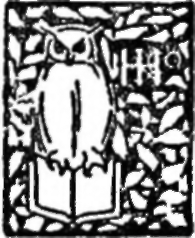

Mountain Interval | by Robert Frost
" An authentic original voice in literature." - The Atlantic Monthly
| Title | Mountain Interval |
| Author | Robert Frost |
| Publisher | Henry Holt And Company |
| Year | 1916 |
| Copyright | 1916, Henry Holt And Company |
| Amazon | Mountain Interval |
By Robert Frost, Author of "North of Boston"
Henry Holt And Company
TO YOU who least need reminding, that before this interval of the South Branch under black mountains, there was another interval, the Upper at Plymouth, where we walked in spring beyond the covered bridge ; but that the first interval of all was the old farm, our brook interval, so called by the man we had it from in sale.
 The Road Not Taken
The Road Not Taken- Two roads diverged in a yellow wood, And sorry I could not travel both And be one traveler, long I stood And looked down one as far as I could To where it bent in the undergrowth; Then took the oth...
- Christmas Trees
- (A Christmas Circular Letter) The city had withdrawn into itself And left at last the country to the country; When between whirls of snow not come to lie And whirls of foliage not yet laid, there d...
- An Old Man's Winter Night
- All out of doors looked darkly in at him Through the thin frost, almost in separate stars, That gathers on the pane in empty rooms. What kept his eyes from giving back the gaze Was the lamp tilted ...
- A Patch Of Old Snow
- There's a patch of old snow in a corner That I should have guessed Was a blow-away paper the rain Had brought to rest. It is speckled with grime as if Small print overspread it, The news o...
- In The Home Stretch
- She stood against the kitchen sink, and looked Over the sink out through a dusty window At weeds the water from the sink made tall. She wore her cape; her hat was in her hand. Behind her was ...
- The Telephone
- When I was just as far as I could walk From here to-day, There was an hour All still When leaning with my head against a flower I heard you talk. Don't say I didn't, for I heard you say- You s...
- Meeting And Passing
- As I went down the hill along the wall There was a gate I had leaned at for the view And had just turned from when I first saw you As you came up the hill. We met. But all We did that day was mingl...
- Hyla Brook
- By June our brook's run out of song and speed. Sought for much after that, it will be found Either to have gone groping underground (And taken with it all the Hyla breed That shouted in the mist a ...
- The Oven Bird
- There is a singer everyone has heard, Loud, a mid-summer and a mid-wood bird, Who makes the solid tree trunks sound again. He says that leaves are old and that for flowers Mid-summer is to spring a...
- Bond And Free
- Love has earth to which she clings With hills and circling arms about- Wall within wall to shut fear out. But Thought has need of no such things, For Thought has a pair of dauntless wings....
- Birches
- When I see birches bend to left and right Across the lines of straighter darker trees, jj I like to think someC^oy's)been swinging them. But swinging doesn't bend them down to stay. Ice-gtorms do...
- Pea Brush
- i walked down alone Sunday after church To the place where John has been cutting trees To see for myself about the birch He said I could have to bush my peas. The sun in the new-cut narrow ga...
- Putting In The Seed
- You come to fetch me from my work to-night When supper's on the table, and we'll see If I can leave off burying the white Soft petals fallen from the apple tree. (Soft petals, yes, but not so barre...
- A Time To Talk
- When a friend calls to me from the road And slows his horse to a meaning walk, I don't stand still and look around On all the hills I haven't hoed, And shout from where I am, What is it? ...
- The Cow In Apple Time
- Something inspires the only cow of late To make no more of a wall than an open gate, And think no more of wall-builders than fools. Her face is flecked with pomace and she drools A cider syrup. Hav...
- An Encounter
- Once on the kind of day called weather breeder, When the heat slowly hazes and the sun By its own power seems to be undone, I was half boring through, half climbing through A swamp of cedar. C...
- Range-Finding
- The battle rent a cobweb diamond-strung And cut a flower beside a ground bird's nest Before it stained a single human breast. The stricken flower bent double and so hung. And still the bird revisited ...
- The Hill Wife
- Loneliness (Her Word) One ought not to have to care So much as you and I Care when the birds come round the house To seem to say good-bye'; Or care so much when they come back With what...
- The Bonfire
- Oh, let's go up the hill and scare ourselves, As reckless as the best of them to-night, By setting fire to all the brush we piled With pitchy hands to wait for rain or snow. Oh, let's not wait for r...
- A Girl's Garden
- A neighbor of mine in the village Likes to tell how one spring When she was a girl on the farm, she did A childlike thing. One day she asked her father To give her a garden plot To plant a...
- The Exposed Nest
- You were forever finding some new play. So when I saw you down on hands and knees In the meadow, busy with the new-cut hay, Trying, I thought, to set it up on end, I went to show you how to make it st...
- "Out, Out-"
- The buzz-saw snarled and rattled in the yard And made dust and dropped stove-length sticks of wood, Sweet-scented stuff when the breeze drew across it. And from there those that lifted eyes could c...
- Brown's Descent
- Or the willy-nilly slide Brown lived at such a lofty farm That everyone for miles could see His lantern when he did his chores In winter after half past three. And many must have seen him mak...
- The Gum-Gatherer
- There overtook me and drew me in To his down-hill, early-morning stride, And set me five miles on my road Better than if he had had me ride^J A man with a swinging bag for load And half the bag wound ...
- The Line-Gang
- Here come the line-gang pioneering by. They throw a forest down less cut than broken. They plant dead trees for living, and the dead They string together with a living thread. They string an instru...
- The Vanishing Red
- He is said to have been the last Red Man In Acton. And the Miller is said to have laughed- If you like to call such a sound a laugh. But he gave no one else a laughter's license. For he turned sudd...
- Snow
- The three stood listening to a fresh access Of wind that caught against the house a moment, Gulped snow, and then blew free again-the Coles Dressed, but dishevelled from some hours of sleep, ...
- Snow. Continued
- One of the lies would make it out that nothing Ever presents itself before us twice. Where would we be at last if that were so? Our very life depends on everything's Recurring till we answer from w...
- The Sound Of The Trees
- I wonder about the trees. Why do we wish to bear Forever the noise of these More than another noise So close to our dwelling place? We suffer them by the day Till we lose all measure...